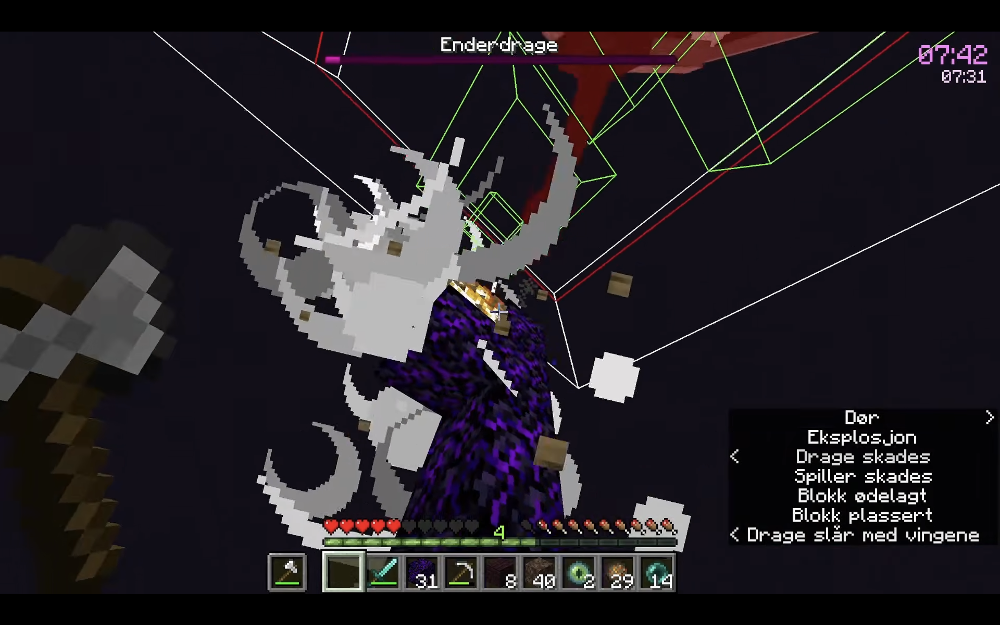
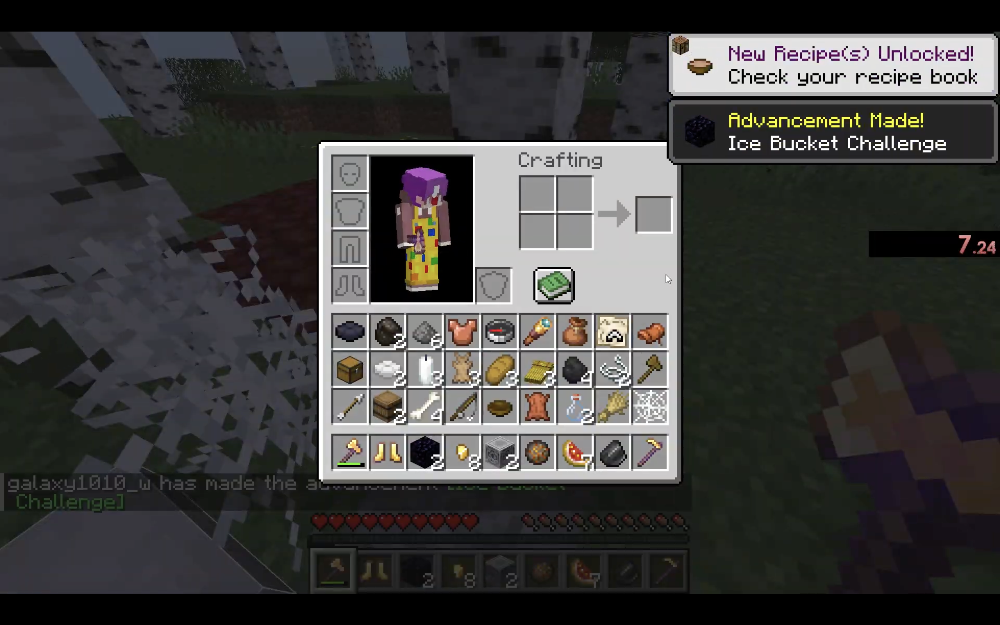

스피드런에 대해
마인크래프트 스피드런은 정해진 룰대로 게임을 최대한 빠르게 클리어하는 것을 목표로 하는 플레이 방식입니다.
이 페이지에서는 스피드런을 처음 접하는 사람도 기본적인 진행 방법과 필요한 정보를 쉽게 확인할 수 있습니다.

무작위로 생성된 시드에서 엔딩 크레딧을 빠르게 띄우는 RSG Any%(제공: dwoh)

정해둔 시드에서 보관함 칸을 빠르게 채우는 SSG Full Inventory(제공: galaxy1010_w)
스피드런의 흐름
스피드런 기본 정보
스피드런은 다양한 종목들이 있으며, 저마다 규칙이 조금씩 다릅니다. 가장 인기 있는 종목은 Any%로, 마인크래프트의 최종 보스인 엔더 드래곤을 잡은 후 나타나는 엔딩 크레딧을 빠르게 보는 것이 목표입니다.
그 외에도 인벤토리(보관함) 다 채우기, 모든 색상 양털 모으기 등 다양한 분야가 있습니다.
Any% Glitchless 진행 과정(인기종목)
오버월드
도구와 네더 차원에 입장하기 위한 포탈을 제작할 재료를 모아서 네더에 입장합니다.
바스티온
가까이에 있는 바스티온으로 이동하여 피글린과 거래해 필요한 아이템을 얻습니다.
포트리스
바스티온과 가장 가까운 포트리스를 찾고 블레이즈를 잡아 필요한 재료를 얻습니다.
블라인드
오버월드로 돌아와 엔더유적의 위치를 계산하고 빠르게 이동합니다.
엔드 포탈
엔더의 눈을 제작하여 엔드 포탈을 활성화하고 엔드 차원으로 이동합니다.
엔드
드래곤을 처치하고 엔딩 크레딧을 띄우면 스피드런을 완료합니다.
초보자 팁
무작정 빠르게만 하려고 하면 실수하거나 막히는 경우가 많으므로, 기술들과 미리 알고 있어야 할 정보들을 충분히 숙지한 후 파트별로 연습합니다.
플레이 방법
1. 기본 정보 확인하기
먼저 자신이 하고 싶은 스피드런 종목과 규칙을 확인합니다.
2. 진행 과정 알아보기
스피드런이 어떤 순서로 진행되는지 확인합니다.
3. 직접 플레이하기
바스티온 라우트 등 자신이 연습해야 할 부분을 먼저 부분별로 나눠 연습합니다.
의견 남기기
페이지에 대한 의견을 남겨주세요.